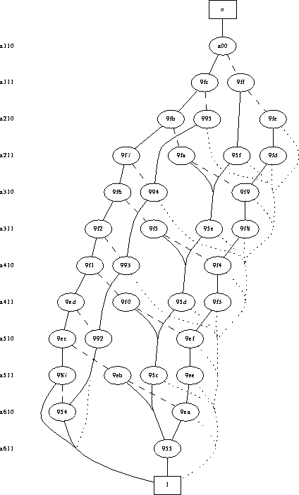

The CUDD package provides several functions to write decision diagrams to a file. Cudd_DumpBlif writes a file in blif format. It is restricted to BDDs. The diagrams are written as a network of multiplexers, one multiplexer for each internal node of the BDD.
Cudd_DumpDot produces input suitable to the graph-drawing program dot written by Eleftherios Koutsofios and Stephen C. North. An example of drawing produced by dot from the output of Cudd_DumpDot is shown in Figure 1. It is restricted to BDDs and ADDs.

Figure 1: A BDD representing a phase constraint for the optimization of
fixed-polarity Reed-Muller forms. The label of each node is the
unique part of the node address. All nodes on the same level
correspond to the same variable, whose name is shown at the left of
the diagram. Dotted lines indicate complement
arcs. Dashed lines indicate regular ``else"
arcs.
Cudd_zddDumpDot is the analog of Cudd_DumpDot for ZDDs.
Cudd_DumpDaVinci produces input suitable to the graph-drawing program daVinci developed at the University of Bremen. It is restricted to BDDs and ADDs.
Functions are also available to produce the input format of DDcal (see Section 2.2) and factored forms.